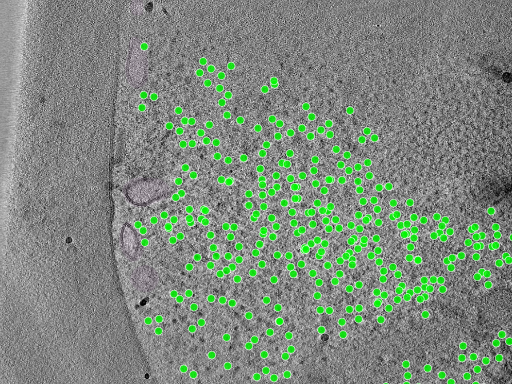

CZ cryoET Data Portal schema: research and LAMBDA alignment
LAMBDA focuses on structural biology: connecting proteins and complexes to samples, experiments, and the workflows used to determine their structures. Cryo-electron tomography (cryoET) adds three-dimensional cellular context, imaging structures such as ribosomes, membranes, mitochondria, microtubules, and RubisCO complexes within frozen specimens. Linking LAMBDA's molecular and experimental records to cryoET images and spatial annotations could connect what a structure is with where it occurs and how it is organized in a cell. The yeast and algal examples below illustrate this opportunity.
Research date: 2026-09-15. Scope: the Chan Zuckerberg cryoET Data Portal metadata and API schemas, compared with this repository's current schema. This is a design assessment, not an implemented crosswalk. Selected public metadata and small assets were inspected as described below.
Findings
The portal is a useful reference for extending LAMBDA's cryoET support. Both projects use LinkML. LAMBDA already represents acquisition parameters, instruments, preparation, workflows, movies, and 3D images. The biggest opportunities are explicit tilt-series identity, alignment and coordinate-system provenance, and spatial annotation entities.
The portal's source has several distinct schema layers; “the CZI schema” does not identify a single interchangeable serialization. The backend snapshot inspected was a991047558b09decf1a3f323adc6b24a8e8eef54. The local schema baseline was cdb7221a57c7439cf371847fd6a2989d7cb71678.
Authoritative sources and versions
| Source | Purpose |
|---|---|
| Core metadata v2.0.0 | LinkML classes for biological context, acquisition, reconstruction, annotations, and alignment |
| Common definitions v2.0.0 | Shared fields, units, constraints, identifier patterns, and enumerations |
| Metadata files v2.0.0 | JSON sidecar structures, paths, and per-section/per-movie metadata |
| API schema | Relational query model; its YAML declares version 1.1.0 despite living under apiv2 |
| Schema README | Object-store directory layout and generation workflow |
| Portal data organization | User-facing meanings of datasets, runs, depositions, and annotations |
The repository also contains core v1.1.0 and ingestion-configuration v1.0.0. Keep schema-layer versions, API generation, and client package versions distinct. Pinned source links above support reproducible inspection; this review does not establish which commit the public service currently deploys.
Main entities and relationships
A portal Dataset groups data acquired from one sample type under common preparation conditions. A Run groups data for one physical imaging location, typically one tilt series, although mosaics can involve more. A Deposition records data submitted together and can include contributions to existing data. Consequently, deposition should not be treated as a strict parent folder enclosing every dataset. These are portal concepts, not exact equivalents of LAMBDA's Dataset container or a facility acquisition session. Data organization
The following is a simplified relationship view of the API source. Arrows indicate references/grouping, not exhaustive cardinality constraints.
Supporting records include gain files, frame-acquisition files, per-section acquisition and alignment parameters, identified objects, authors, funding, and annotation-method links. Frame relates to movie-stack metadata; do not assume it denotes one detector exposure within a movie. The file schema explicitly describes PerFrameMetadata as per-movie-stack metadata. API, metadata files
Acquisition, reconstruction, and coordinates
- TiltSeries: microscope and camera configuration; accelerating voltage; pixel spacing; tilt axis, range, step, and scheme; total exposure dose (
total_flux); binning; acquisition/alignment software; quality; and alignment status. - Per-section parameters: raw tilt angle, defocus components, astigmatic angle, phase shift, and section index.
- Alignment: alignment type/method, reconstruction-volume dimensions and offsets, rotations, a 4×4 affine transformation, and portal-standard status. Per-section alignment includes projection offsets and an in-plane rotation matrix.
- Tomogram: voxel spacing, dimensions, offsets, reconstruction and processing methods/software, CTF correction, fiducial alignment status, authorship, dates, and transformation metadata.
These concepts are defined in the core schema and common fields. Preserve their relationship graph: equal voxel spacing alone does not establish that two volumes or annotation files share coordinates.
Annotations
The schema separates the annotation's scientific meaning and provenance from its geometric representation and stored files. It records object identity/state, method, software, authors, object count, confidence, and ground-truth status. API records separate Annotation, AnnotationShape, and AnnotationFile; annotation files reference alignment and voxel-spacing records. A forced one-annotation-to-one-tomogram conversion could therefore lose applicability information. Core, API
Current shape enum values are SegmentationMask, OrientedPoint, Point, InstanceSegmentation, InstanceSegmentationMask, Mesh, GlobalCaption, and AnnotationCaption. Method types include manual, automated, hybrid, and simulated. Source formats vary by shape, including MRC/Zarr masks, STAR and other point formats, and mesh formats such as OBJ/STL/VTK/GLB. Do not interpret all source formats as uniform portal download formats. Common definitions
Object identifiers can use GO, UniProtKB, UBERON, CHEBI, CDPO, CL, or PDB. This is broader than a protein entity: membranes, cellular structures, chemicals, and artifacts can be targets. CDPO supplies terms for support materials, contamination, fiducials, and image artifacts. Identifier definitions, CDPO documentation
Real YAML examples and associated image data
What is available in YAML?
Yes: the backend publishes real dataset ingestion configurations in YAML. These combine descriptive metadata with instructions for finding and converting source images and annotations. They are different from the LinkML schema definitions and from the published JSON metadata sidecars.
| Example | What it demonstrates | Browse the images |
|---|---|---|
| 10000.yaml | S. pombe cryo-FIB lamellae imaged with defocus; ribosome and fatty-acid-synthase points plus GO-labeled organelle/membrane masks | DS-10000 |
| 10001.yaml | Related S. pombe data acquired with a Volta phase plate; useful comparison of acquisition conditions | DS-10001 |
| 10301.yaml | Chlamydomonas reinhardtii lamellae; oriented points for ATP synthase, ribosomes, nucleosomes, RubisCO, and microtubules | DS-10301 |
| template.yaml | Starting point for authoring ingestion configuration | Configuration template, not a biological dataset |
For instance, the following abridged excerpt preserves the structure and values of the ribosome entry in 10000.yaml. Authors, dates, method details, and other required context are omitted here; use the linked full configuration for ingestion.
annotations:
- metadata:
annotation_ingest_id: cytosolic-ribosome-1
annotation_object:
id: GO:0022626
name: cytosolic ribosome
annotation_software: pyTOM + Keras
ground_truth_status: true
method_type: hybrid
version: 1.0
sources:
- Point:
columns: xyz
file_format: csv
glob_string: particle_lists/{run_name}_cyto_ribosomes.csv
is_visualization_default: true
The same configuration uses SemanticSegmentationMask source entries with file_format: mrc and a mask_label to extract individual classes from a labeled volume. For example, mitochondrion (GO:0005739) uses label 2 and microtubule (GO:0005874) uses label 4. These are source-volume labels, not GO numeric identifiers or universal label values. Ingestion can publish an extracted object mask with shape SegmentationMask. The source CSV/glob paths are ingestion inputs, not public download URLs. Full configuration
A concrete run: yeast TS_026, with images and annotations
Start at run RN-241 / TS_026 in DS-10000. The inspected reconstruction is 960 × 928 × 1000 voxels, with metadata voxel spacing 13.48 Å, reconstructed by IMOD using weighted back projection (WBP). Its ribosome annotation reports 838 objects; the public NDJSON file contains exactly 838 point records. The membrane annotation provides segmentation volumes. Both annotation sidecars reference the same alignment metadata as the tomogram. Tomogram metadata, ribosome metadata, membrane metadata

Unmodified portal preview for TS_026, credited to the dataset contributors. This is a representative 2D preview with selected overlays; use the linked volumes for quantitative analysis. Original preview
{kind=link}
| Asset | Public data | Local readable metadata |
|---|---|---|
| Dataset | JSON | dataset.yaml |
| Reconstruction | MRC, 1.78 GB; OME-Zarr metadata | tomogram.yaml |
| Ribosome points | NDJSON, 56.9 kB | ribosome.yaml |
| Membrane mask | MRC, 891 MB; OME-Zarr metadata | membrane.yaml |
| Alignment | JSON | alignment.yaml |
Sizes above are decimal and rounded. The local YAML files are complete JSON-to-YAML reserializations made for this report, not native upstream YAML examples. Field values are unchanged, including author attribution and dates. Provenance and checksums identify the exact retrieved payloads. The complete point file is also included locally.
This is a reduced YAML view of the published ribosome sidecar, showing how biological identity connects to a geometry file and an alignment:
annotation_object:
id: GO:0022626
name: cytosolic ribosome
method_type: hybrid
ground_truth_status: true
object_count: 838
files:
- format: ndjson
path: 10000/TS_026/Reconstructions/VoxelSpacing13.480/Annotations/101/cytosolic_ribosome-1.0_point.ndjson
shape: Point
is_visualization_default: true
alignment_metadata_path: 10000/TS_026/Alignments/100/alignment_metadata.json
The first geometry record is:
{"type": "point", "location": {"x": 517.0, "y": 261.0, "z": 469.0}}
Thus the GO identifier is carried once in the annotation metadata, and the separate file supplies its spatial instances. The coordinate record itself does not include units or a GO identifier; interpret it with its parent metadata and coordinate convention. OME-Zarr explicitly stores array axes as z, y, x, whereas the point record names x, y, z individually.
A useful real-data wrinkle: the tomogram JSON and membrane OME-Zarr metadata report 13.48 Å, while the tomogram's OME-Zarr scale reports 13.481 Å. Preserve that source precision and establish a conversion/tolerance policy before asserting exact coordinate equivalence. The MRC headers and finest Zarr shape agree on 960 × 928 × 1000 voxels. Tomogram Zarr metadata, array shape, membrane Zarr metadata
GO cellular-component terms: actual usage
Yes—these are actual GO Cellular Component identifiers used to name the imaged objects, including molecular complexes as well as cellular compartments. Their GO aspect was checked using the QuickGO ontology service.
| GO term | Object | Example source representation |
|---|---|---|
| GO:0022626 | Cytosolic ribosome | Yeast points; algal oriented points |
| GO:0016020 | Membrane | Yeast segmentation masks |
| GO:0005739 | Mitochondrion | Yeast segmentation source label 2 |
| GO:0005874 | Microtubule | Yeast masks; algal oriented points |
| GO:0048492 | Ribulose bisphosphate carboxylase complex (RubisCO) | Algal oriented points |
| GO:0045259 | Proton-transporting ATP synthase complex | Algal oriented points, labeled “F1-F0 complex” by the contributor |
Representation evidence: yeast configuration and algal configuration. Dataset-wide configuration does not mean every target occurs in every run.
Three distinct meanings should remain separate in a LAMBDA integration:
- Sample context: a dataset's
cell_componentdescribes the sampled cellular component. In the inspected DS-10000 sidecar it isnot_reported, even though individual annotations have precise GO identifiers. - Spatial object identity:
annotation_object.id: GO:0022626classifies the structures whose locations are in the annotation file. It does not identify the particular protein sequences comprising each ribosome. - Protein functional/localization annotation: a GO assertion about a Protein is a different relationship. A ribosome point alone does not establish the identity, function, or localization of every constituent protein.
This suggests a useful synergy: connect GO-classified image objects to explicitly supported molecular entities and experimental provenance, while keeping the spatial observation and the biological assertion separately traceable. The algal RubisCO example is particularly relevant to connecting molecular structure with organization in photosynthetic cells.
Proposed mapping to lambda-ber-schema
These are design recommendations inferred from comparison with src/lambda_ber_schema/schema/lambda_ber_schema.yaml, not upstream equivalence assertions.
| Portal concept | Existing LAMBDA coverage | Mapping assessment |
|---|---|---|
| Dataset | Study, Sample, SamplePreparation | Split grouping from specimen and preparation metadata; do not equate it with LAMBDA's Dataset serialization container. |
| Run | ExperimentRun | Similar but potentially different granularity. Preserve each imaging location; decide whether it is an experiment or an acquisition child of a session. |
| Microscope/camera | CryoEMInstrument, ExperimentInstrumentAssociation | Reuse instrument records and preserve per-acquisition settings. |
| TiltSeries | ExperimentRun tilt fields, DataFile | Acquisition values are substantially covered; a separately identified tilt-series entity is missing. |
| Frame and gain/acquisition files | Movie, DataFile | Partial fit; explicit tilt-series membership, tilt order, and gain-reference relationships need design. |
| Tomogram | Image3D, WorkflowRun, DataFile | Dimensions, voxel size, and reconstruction method exist; alignment identity and reconstruction variants need stronger representation. |
| Alignment and per-section parameters | WorkflowRun, Movie/Micrograph fields | Partial numerical overlap, but no dedicated alignment/coordinate model. |
| Annotation/Shape/File | DataFile | File storage alone cannot express object identity, geometry, applicability, and annotation provenance. |
| Deposition | Study and generic metadata | No dedicated deposition entity; retain independent submission provenance. |
The existing ExperimentRun already has tilting_scheme, tilt_angle_min, tilt_angle_max, tilt_angle_increment, tilt_axis_angle, number_of_tilt_images, dose_per_tilt, and total_dose. Image3D already has dimensions_z, voxel_size, and reconstruction_method, plus inherited image dimensions. Avoid duplicating these without defining ownership and synchronization.
Conversion pitfalls
- Units: portal accelerating voltage is in volts; pixel/voxel spacing uses angstroms; total flux is electrons per square angstrom. Convert explicitly into LAMBDA
QuantityValuevalues and units. Portal precision/recall are percentages on 0–100. Common definitions - Tilt range: file metadata uses a structured min/max range, while the API has a scalar total-range field. A scalar range cannot recover asymmetric endpoints. Prefer sidecars or actual angle lists when needed. Core, API
- Identity: portal UniProt identifiers use
UniProtKB:; this repository requiresuniprot:for Protein identifiers. Normalize deliberately, retain source identifiers, and only create Protein records for protein targets. Identifier patterns - Dates: portal date fields need explicit serialization into LAMBDA's intentionally string-based date fields. Core
- Storage: the portal has MRC files and multiscale OME-Zarr directories. LAMBDA's current
FileFormatEnumincludes MRC but lacks Zarr/OME-Zarr. Directory-backed array assets need an explicit representation, not an assumed single-file checksum. Storage layout - Source consistency: common shape enums include captions, while the inspected
AnnotationFileMetadata.format.any_ofdoes not list the caption-format enum. Verify generated validators and actual payloads before promising all shapes round-trip through every layer. Common, metadata files
Recommended next steps
- Define a small cryoET profile reusing existing instruments, preparation, acquisition quantities, workflows, and files.
- Add explicit tilt-series and alignment/coordinate records, then spatial annotation records with object identifiers, shapes, provenance, and file applicability.
- Keep new entity collections flat in Dataset; use association tables for M:N relationships, consistent with this repository's design.
- Add OME-Zarr support and explicit units/identifier conversion rules.
- Validate a crosswalk against one real run with multiple reconstruction variants and annotations, checking transforms, spacing, dose units, and source provenance. Pin both upstream schema and client versions.
No schema changes or adapter implementation were made as part of this research. Verification covered public JSON metadata, lossless YAML reserialization, all 838 ribosome point records, the preview image, OME-Zarr metadata, and 1,024-byte HTTP range reads of the image/mask MRC headers. Full volumes were not downloaded, and no full upstream-schema or image-overlay validation was performed.